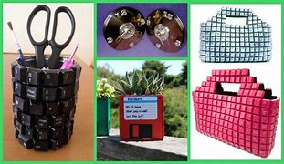

Reutilização de Equipamentos
A reciclagem adequada do lixo eletrônico é essencial para mitigar esses impactos. Através de processos de reciclagem especializados, é possível recuperar materiais valiosos, como ouro, prata, cobre e platina, reduzindo a necessidade de extração de novos recursos naturais e promovendo a economia circular. No entanto, atualmente, apenas uma pequena fração do lixo eletrônico é reciclada corretamente, sendo o restante descartado de forma inadequada, muitas vezes em aterros sanitários ou exportado para países em desenvolvimento, onde é processado sem as devidas precauções ambientais e de saúde.

Projetos Sociais
Organizações como a Green Eletron e a plataforma eCycle oferecem ferramentas online para auxiliar na localização de pontos de coleta de lixo eletrônico.
Green Eletron: A Green Eletron disponibiliza um localizador de Pontos de Entrega Voluntária (PEVs) em seu site. Ao acessar , você pode inserir seu endereço e selecionar a categoria de resíduo para encontrar o ponto de coleta mais próximo. O sistema fornece informações detalhadas, incluindo o endereço, horário de funcionamento e o tamanho do coletor, facilitando o descarte adequado de seus dispositivos eletrônicos.
Green Eletron
carte, reciceCycle: A plataforma eCycle oferece um mecanismo de busca gratuito para localizar postos de deslagem ou doação próximos a você. Acesse , insira o tipo de resíduo que deseja descartar e sua localização para encontrar os pontos de coleta disponíveis em sua região.